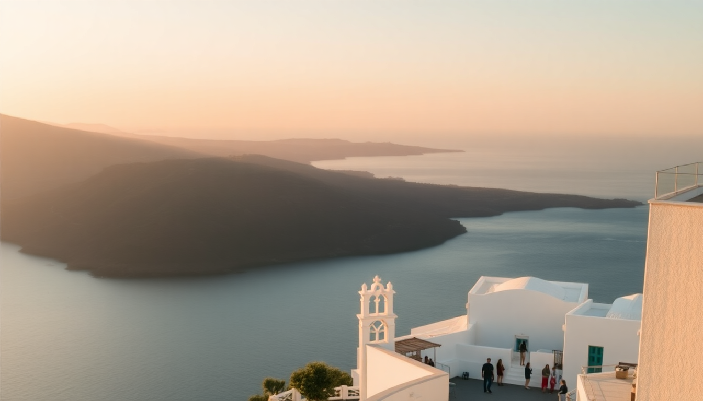

Best Time to Visit the Greek Islands: A Practical Guide

I’ve done the Greek Islands twice—once in peak August and once in late September. The difference was night and day. In August, I stood in a 45-minute line for a bus in Fira, paid €12 for a gyro in Mykonos, and slept in a room with no AC that worked. In September, I walked straight onto the same bus, got a table at a sea-view taverna in Chania without a reservation, and paid half the price for a boutique hotel in Oia. This guide tells you exactly when to go to each island based on what you actually want: empty beaches, affordable rooms, or warm swimming water.
What is the best time to visit Santorini?
Late September to early October is the sweet spot for Santorini. The cruise ships thin out after the first week of October, and the meltemi winds (which can be brutal in August) calm down. We stayed at Aigialos Hotel in Fira during late September, and the pool was never crowded. The caldera views from Oia Castle still had sunset crowds, but we could actually find a spot on the wall without arriving two hours early.
- April to May: Wildflowers bloom, but many hotels and restaurants in Oia are still closed. The water is too cold for swimming (around 17°C).
- June to August: Peak season. Expect queues for the cable car in Fira (30+ minutes), and rooms at Canaves Oia Suites start above €500 a night. The sunset at Skaros Rock in Imerovigli is packed.
- September to October: Perfect. We swam at Red Beach in early October and had the water to ourselves. Prices drop by 30-40% after September 15.
- November to March: Many hotels shut down. The Santorini Wine Route wineries like Domaine Sigalas stay open, but the island feels ghostly.
What is the best time to visit Mykonos?
Mykonos is a party island, so the best time depends on whether you want to dance or sleep. I made the mistake of going in mid-August. Paradise Beach was a wall of bodies, and a simple cocktail at Scorpios cost €22. The next time I went in early June, the vibe was relaxed, and the beach clubs were open but not insane.
- Late May to early June: The clubs open, but the crowds haven't arrived. We got a sunbed at Kalua Beach Bar for €30 (instead of €100 in August). The water is chilly but swimmable.
- July to August: Peak madness. Little Venice is shoulder-to-shoulder at sunset. Rooms at Mykonos Blanc start at €700. If you come for the nightlife at Cavo Paradiso, you'll love it; if you want quiet, avoid.
- September: The meltemi winds die down, and the sea is still warm (24°C). We ate at Kiki's Tavern in Agios Sostis without the famous 90-minute wait.
- October to April: Most bars and restaurants close. Mykonos Town is a maze of shuttered shops. Not worth it unless you're after solitude.
What is the best time to visit Crete?
Crete is huge and varied, so the best time depends on which coast you're on. We spent a week in Chania in late May and another week in Heraklion in early October. Both were excellent, but for different reasons.
- April to June: Spring is ideal for hiking the Samaria Gorge. We did it in early June, and the wildflowers were out, but the heat wasn't punishing. The beaches near Elafonisi Beach and Balos Lagoon were accessible without the summer crowds.
- July to August: Hot (35°C+ inland) and packed. The drive from Chania to Balos Lagoon took us 2 hours due to traffic—normally 45 minutes. Rooms at Casa Delfino Hotel & Spa in Chania were €350 a night.
- September to October: The best window for swimming. We swam at Elafonisi Beach in early October with maybe 30 other people total. The water was 25°C. Wineries like Lyrarakis near Heraklion have harvest events.
- November to March: Rainy and cool on the north coast, but the south coast (e.g., Paleochora) stays mild. Many archaeological sites like Knossos Palace are open and empty.
When should I visit for the cheapest flights and hotels?
If your budget is tight, aim for the shoulder months: May and September. We booked flights from London to Santorini in mid-September for €120 round trip (versus €350 in August). Hotels like Hotel Keti in Fira dropped from €200 a night to €90. The catch: some restaurants in Oia close for a week in late September, so check before you book.
- Cheapest overall: November (except for Crete, which stays mild). Flights to Heraklion can drop to €50 one-way from Athens.
- Most expensive: July and August. Mykonos hotels are the worst offenders—we saw a basic room at Villa Konstantin listed for €600.
- Best value: Late September. You get summer weather (25°C) with autumn prices.
What about the weather and sea conditions?
I learned the hard way that the meltemi wind in August can make ferry rides miserable. The high-speed catamaran from Santorini to Mykonos was so rough that half the passengers were sick. In September, the same route was calm.
- June to August: Winds peak in July and August. The Aegean Sea is choppy. Swimming is fine on sheltered beaches (e.g., Amoudi Bay in Santorini), but exposed spots like Red Beach can have strong currents.
- September to October: Winds drop significantly. The sea is still warm (23-25°C) through mid-October. We snorkeled at Kolymbia Beach in Rhodes in early October with perfect visibility.
- April to May: The sea is cold (16-18°C). Only hardy swimmers go in. The air temperature in Crete can hit 25°C, but the water takes time to warm.
FAQ
Is it worth visiting the Greek Islands in winter? Only if you want solitude and don't mind cold weather. We visited Crete in January, and while Knossos Palace was empty, the north coast was rainy and many tavernas in Chania were closed. Santorini and Mykonos are practically shut down—most hotels, restaurants, and tours don't operate. Ferry schedules are sparse. Stick to Athens or the mainland in winter.
Which Greek island has the best weather in October? Crete. The south coast (around Paleochora and Loutro) stays warm into late October, with highs of 26°C. Santorini and Mykonos are cooler (20-22°C) and windier. We swam in Crete on October 15 without a wetsuit.
How far in advance should I book for the best time? For May and September, book hotels 2-3 months ahead. For July and August, book 6 months out—especially in Mykonos and Santorini. We booked Aigialos Hotel in Fira for late September in March and got a 20% early-bird discount. For ferries, book 2 weeks ahead in peak season; they sell out.
Conclusion
- Santorini: Late September to early October for calm winds, empty beaches, and affordable rooms in Fira and Oia.
- Mykonos: Early June for beach clubs without the chaos, or September for warm water and no queues at Kiki's Tavern.
- Crete: May for hiking the Samaria Gorge; September to October for swimming at Elafonisi and Balos Lagoon without crowds.
- Budget travel: May and September cut flight and hotel costs by 40-60% compared to August.
- Avoid: July and August unless you specifically want nightlife in Mykonos or don't mind paying €700 a night for a basic room.